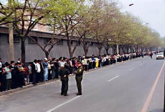
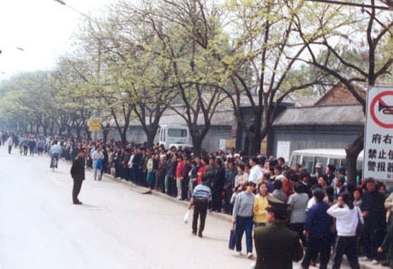
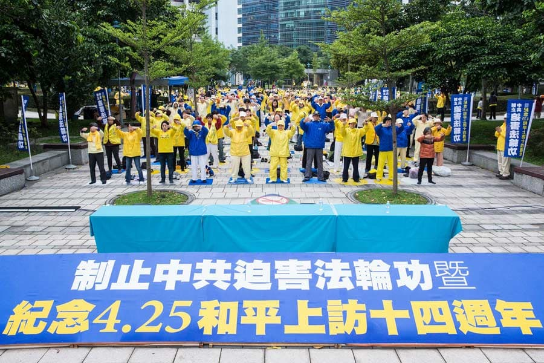

四•二五上访，是法轮功学员在中共迫害升级的情况下，不得已采取的合理合法的反迫害举动。
四•二五上访，展示了法轮功学员和平理性的境界，展示了他们维护正义良知的道德勇气。
中共迫害在先，法轮功学员依法上访在后
法轮功学员的上访极其和平理性，既没有大声喧哗，更没有阻塞交通。对中南海，他们既没有“围困”，更没有“攻击”，他们只是依法集体到信访办公室上访，而该办公室在中南海附近。中共江泽民集团为迫害法轮功，把法轮功学员的依法上访诬陷为“闹事”、“围攻中南海”，这是栽赃陷害。闹事的恰恰是中共。是因为中共迫害在先，才有法轮功学员依法上访在后。
四•二五上访的直接原因：天津警察抓人打人，拒不放人
一九九九年四月十一日，当时的中共政法委书记罗干的连襟何祚庥在天津教育学院办的《青少年科技博览》杂志上发表文章，无中生有诋毁法轮功。四月十八日至二十四日，部分天津法轮功学员前往天津教育学院及相关机构反映实情。四月二十三日、二十四日，中共政法委书记罗干命令天津市当局出动防暴警察三百多名，驱散并殴打澄清事实的法轮功学员，并逮捕了四十五名法轮功学员。法轮功学员到天津市政府要求放人，被告知：公安部介入了这个事件，你们去北京才能解决问题。
天津事件之前中共的打压迫害
中共对法轮功的打压在一九九六年就已经开始。一九九六年六月十七日《光明日报》发表文章诋毁法轮功。一九九六年七月二十四日，中共中央宣传部下属新闻出版署向全国各省市新闻出版局下发内部文件，禁止出版发行《转法轮》、《中国法轮功》等书籍。一九九七年初中共政法委书记罗干指使公安部以先定罪、后调查的方式，在全国搜罗罪证欲构陷法轮功。一九九八年五月北京电视台《北京特快》栏目播放何祚庥对法轮功的诽谤。
四•二五上访的三点诉求
一. 释放被非法抓捕的天津法轮功学员
二. 允许法轮功书籍合法出版
三. 合法的炼功环境
四•二五上访现场
 1. 和平、理性的上访人群，上访学员秩序井然
2. 警察放松地闲聊，无任何压力
3. 上访学员把盲道让出来，不影响行人，不阻碍交通
4. 上访学员没有口号、标语，静静地站着
5. 上访学员离开时，把垃圾都打扫干净
中共江泽民集团发动迫害是其邪恶本质所致
以伪造出身、镇压六四学生起家的中共头子江泽民出于恐惧，加之嫉妒朱镕基因合理处理此事得到的赞誉，不顾其他六个政治局常委的反对，执意要迫害法轮功。一九九九年七月二十日，中共开始全面迫害法轮功，实施“名誉上搞臭、经济上截断、肉体上消灭”、“打死算自杀”等灭绝政策；全国媒体铺天盖地的编造和散布各种谎言，如同文革再现；一时间，神州大地血雨腥风。
世界各地法轮功学员纪念四•二五和平上访
每年的四•二五之际，世界各地的法轮功学员都会在当地举行纪念四•二五和平上访的活动，向公众讲述四•二五事件的真相和法轮功的真实情况，抗议中共江泽民集团对法轮功的迫害，呼吁社会各界和法轮功学员一起制止这场旷日持久的迫害。越来越多的民众明白了法轮功真相，支持法轮功学员反迫害。
-文章内容选自 明慧网，更多内容请访问 minghui.org
主页 上级目录